China Social Insurance for Foreign Employees in 2026: Mandatory Coverage, Treaty Exemptions, and Employer Risk Controls
Key takeaways
- For most foreign employers, social insurance for eligible employees in China is an operational compliance requirement, not a discretionary policy choice.
- The biggest risk is usually execution drift: onboarding, contribution-base setup, and monthly filing logic are not aligned across HR, payroll, and vendor teams.
- Bilateral social security agreements can reduce duplicate contributions in specific cases, but employers should treat exemption handling as an evidence-driven process, not an assumption.
- EOR buyers should demand city-specific workflow transparency, including filing cutoffs, documentary standards, and exception ownership.
- Where implementation practice may still vary by location, use explicit caveats and maintain a documented review trail.
Why this issue is decision-critical for foreign employers now
Many overseas companies still frame China social insurance as a technical payroll task that can be delegated and forgotten. In practice, it is a board-level risk control question because it sits at the intersection of legal employment status, monthly cash cost, and employee trust. Once an employment relationship is established in China, social insurance handling becomes part of the employer’s baseline compliance posture. When teams scale quickly, that posture often degrades quietly: start dates are not synced to enrollment timelines, payroll systems carry stale base settings, and exception claims are handled informally instead of through a structured evidence path.
For foreign employers evaluating direct hiring versus EOR models, this is exactly where vendor quality becomes visible. A provider that cannot clearly explain local enrollment timing, document logic, and contribution controls is not merely “less efficient”; it can create accumulated exposure that only surfaces during dispute events, audits, or senior-level employee exits.
Policy baseline: what is broadly clear under national law
At national level, two points are relatively clear in legal structure. First, China’s employment framework expects formalization of the employment relationship and defines employer responsibilities around compliant employment administration. Second, China’s social insurance framework establishes participation and contribution mechanisms that employers must execute through regular administration and filing.
For foreign employers, the practical meaning is straightforward: social insurance should be designed as a default operating process for in-scope employees, not as an optional add-on to be considered later. The question is generally not whether the workflow exists, but how reliably it is performed. This distinction matters because many compliance failures occur in organizations that do have policy documents but lack synchronized execution between HR operations, payroll configuration, and local filing calendars.
Where complexity starts: city execution and treaty pathways
If national law provides the legal spine, local administration defines the daily muscle movement. City-level authorities and platform processes can differ in documentary expectations, submission sequence, and exception handling. That means a process map that works in one city may not transfer perfectly to another without adjustment.
The second complexity layer is treaty-based relief in cross-border employment contexts. Bilateral social security agreements may allow contribution exemptions for certain foreign employees and specific insurance branches, subject to conditions and documentation. However, this is often where overconfidence appears. Employers hear that an exemption “is possible” and treat it as “is automatic.” In reality, filing authorities usually expect clear documentary support and procedural consistency. If evidence is incomplete or submitted outside expected windows, organizations may still face standard contribution handling until the case is formally recognized.
Why this matters for EOR and direct-employer models
From a decision standpoint, social insurance administration is one of the fastest ways to distinguish between a compliant market-entry design and a fragile one. In a direct-employer model, the in-house team bears full control burden: policy design, bureau interaction, payroll execution, and employee communication all require internal maturity. In an EOR model, those activities are operationally outsourced but accountability to stakeholders remains with the client company.
This is why buyer diligence should go beyond “Does your provider handle social insurance?” A stronger question set is process-specific: Which local entities run filings? What are the cutoff dates for employee changes? How are contribution-base updates approved and evidenced? How are treaty-exemption requests triaged, documented, and escalated? How is discrepancy remediation tracked month to month? The provider that can answer these questions with concrete workflow artifacts is usually the one better positioned to protect the employer from avoidable drift.
Scenario analysis for foreign employer decisions
Scenario A: Fast hiring in two cities with one global HR policy
A growth-stage foreign company hires quickly in Shanghai and Shenzhen under a single global HR playbook. The policy language is consistent, but city workflows differ in form details and administrative timing. The company assumes one payroll configuration will work nationally. Within months, the team sees mismatches in enrollment dates and contribution calculations, and retroactive corrections start consuming finance and HR capacity.
The core failure is not legal ignorance; it is operating-model over-simplification. A better approach is city-specific implementation design under a common governance framework: one policy intent, different execution checklists. That means pre-defining city onboarding matrices, filing cutoffs, and reconciliation controls before volume hiring starts.
Scenario B: Expat assignment with expected treaty relief
A regional leadership assignee enters China and the business expects social insurance relief under a bilateral framework. Payroll is instructed informally to apply reduced treatment from month one, but supporting documentation is delayed. Local filing treatment does not align with the assumption, and corrective actions are required later.
The lesson is procedural discipline. Exemption expectations should be treated as conditional until documentary requirements are satisfied and local handling is confirmed. For governance, employers should use status labels such as “expected relief,” “relief pending confirmation,” and “relief approved” instead of binary yes/no assumptions. This keeps payroll treatment and stakeholder communication aligned with evidentiary reality.
Practical action checklist: what to do in the next 30 days
1. **Map legal-to-operational ownership.** Define who owns employment-contract timing, insurance enrollment data, contribution-base settings, monthly filing, and discrepancy closure. Cross-functional ambiguity is a common root cause of compliance drift.
2. **Build a city-by-city compliance matrix.** Even with one national policy, document local cutoffs, forms, portal steps, and common rejection reasons. Maintain version history so teams can show governance over time.
3. **Create an exemption evidence protocol.** For treaty-related cases, require a minimum evidence pack, approval chain, and filing timestamp log before payroll treatment changes.
4. **Run monthly variance checks.** Compare expected versus filed contribution outcomes by employee group and city. Escalate unexplained deviations within the same payroll cycle.
5. **Align employee communication templates.** Use plain-English and, where needed, bilingual notices that explain what is confirmed, what is pending, and when updates are expected.
6. **Audit vendor controls if using EOR.** Request sample anonymized process evidence: onboarding logs, filing confirmations, exception registers, and remediation SLAs.
7. **Document uncertainty explicitly.** Where local interpretation is still developing, record assumptions, advice source, and next review date.
What to watch next in 2026
The structural direction in China compliance is toward tighter data consistency and stronger procedural evidence, not lighter administration. For foreign employers, that means process quality is becoming more important than policy rhetoric. Watch for three signals during 2026:
- **Administrative digitization effects:** Portal updates and data-integration changes can alter practical filing behavior even when headline law remains stable.
- **City-level practice convergence—or divergence:** Some locations may standardize faster, while others preserve localized handling nuances.
- **Rising scrutiny on documentation quality:** In disputes or audits, employers with complete timestamped records generally manage outcomes more predictably than those relying on retrospective explanations.
Because implementation can move faster than internal policy refresh cycles, quarterly governance reviews are usually more effective than annual-only checks.
FAQ
1) Is social insurance for foreign employees in China optional if the employee prefers cash compensation instead?
In most standard employment situations, this should not be treated as optional employer discretion. China’s social insurance framework is designed as a statutory participation system. Employers should avoid replacing required handling with informal compensation substitutions unless a lawful and documented basis exists.
2) If a bilateral social security agreement exists, can we stop contributions immediately?
Employers should avoid immediate assumption-based changes. Treaty pathways can be available, but practical treatment typically depends on scope, supporting documents, and local acceptance process. Use a staged status approach and apply changes only after formal confirmation.
3) Can one national payroll workflow cover all China cities?
A shared governance framework is useful, but execution details often need city-level tailoring. Filing calendars, system fields, and documentary standards may differ. Treat “national consistency” as a control objective, not as identical process steps everywhere.
4) What is the highest-risk operational failure for foreign employers?
A common high-risk pattern is mismatch between HR onboarding events and payroll filing execution, especially during fast hiring or entity transitions. The legal framework may be understood, but poor cross-team synchronization creates real exposure.
5) How should EOR clients evaluate provider quality on this issue?
Ask for workflow evidence, not only policy assurances: who files, when, with what controls, and how exceptions are resolved. Strong providers can show process maps, timestamps, escalation paths, and remediation performance data.
6) Do English-language legal texts remove all interpretation risk?
No. English texts are useful for business planning, but Chinese-language originals and current local administrative practice remain critical reference points for complex cases. Keep a documented review process for interpretive edge cases.
7) How often should we review our social insurance control framework?
For scaling teams, quarterly review is generally more resilient than annual-only review. High-change periods—rapid hiring, new city entry, provider migration—may justify monthly control checks.
Final decision lens for foreign employers
The strategic mistake is to treat China social insurance as a static legal rulebook. It is better understood as a living operating system that links legal duty, payroll execution, and stakeholder confidence. Employers that build a documented, city-aware, evidence-led process usually experience fewer surprises and lower remediation cost. Employers that rely on assumptions often discover hidden process debt at the worst possible moment—during disputes, leadership transitions, or urgent compliance reviews.
A compliance-first EOR approach can materially reduce this risk when governance is explicit and auditable. The objective is not to eliminate uncertainty entirely; it is to make uncertainty visible, controlled, and reviewable before it becomes a business problem.
Disclaimer
This content is for informational purposes only and does not constitute legal, tax, or labor advice. Employers should seek qualified professional advice based on their specific facts, city of employment, and current regulatory practice.
Sources
- National People’s Congress (official): Labor Contract Law of the PRC (2012 Amendment) — http://www.npc.gov.cn/zgrdw/englishnpc/Law/2007-12/13/content_1384064.htm
- National People’s Congress (official): Social Insurance Law of the PRC — http://www.npc.gov.cn/zgrdw/englishnpc/Law/2009-02/20/content_1471106.htm
- PwC Worldwide Tax Summaries: PRC individual taxation (other taxes / social security) — https://taxsummaries.pwc.com/peoples-republic-of-china/individual/other-taxes
Need help structuring a compliance-first employer setup?
If your team is evaluating China hiring options, China-Payroll.com can support a practical EOR workflow review focused on social insurance controls, payroll execution quality, and city-level compliance consistency.
Need local employment support in China?
If you need a compliance-first Employer of Record (EOR) partner for hiring, payroll, and risk controls in China, China-Payroll.com can help your team evaluate the right setup.
Image Prompt Pack
Create a 16:9 hero image for article title: 'China Social Insurance for Foreign Employees in 2026: Mandatory Coverage, Treaty Exemptions, and Employer Risk Controls'. Scene: finance and payroll operations team reviewing contribution base dashboards in a modern…